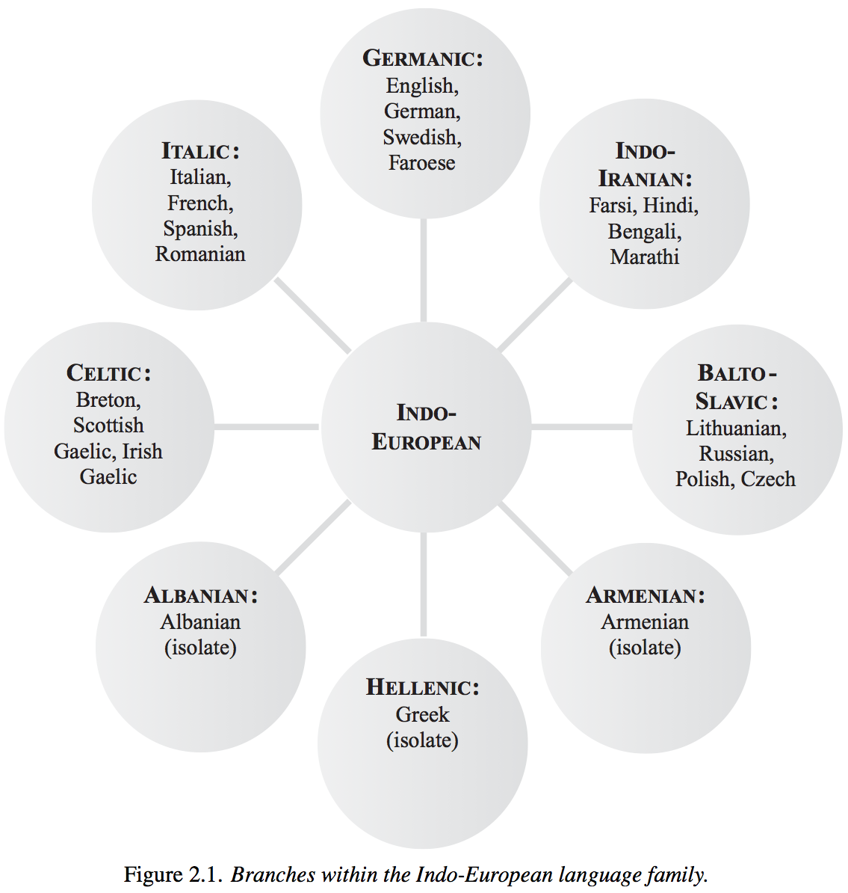

Did you know deer can jump higher than the average house?
It’s because of their strong hind legs and the fact that the average house can’t jump.
|
|
Lecture attendance isn’t mandatory
Recitation can be missed with a doctor’s notes
We’re happy to go over course content one-on-one when you feel better.
You’ll recover sooner in bed than in lecture!
Grammatical Gender and Noun Class
‘Indo-European’
Indo-European Families
Germanic, Celtic, and Italic Languages and Features
When it’s appropriate, we’ll start lectures by talking about a grammatical feature or linguistic idea
It’ll usually be linked to what we’re discussing
Today, Grammatical Gender!
Grouping words into multiple genres, and using different forms and “agreements” for each
We call it “Grammatical Gender” when masculine/feminine are used, “Noun class” when there are other categories
Un homme parfait - ‘a perfect man’ (masculine)
Une femme parfaite - ‘a perfect woman’ (feminine)
Un appartement parfait - ‘a perfect apartment’ (masculine)
Une tondeuse parfaite - ‘a perfect lawnmower’ (feminine)
When words or forms change to “match” a characteristic of another part of the sentence
Um gato preto - ‘a black cat’ (masculine)
Uma gata preta - ‘a black cat’ (feminine)
Um garfo prateado - ‘a silver fork’ (masculine)
Uma colher prateada - ‘a silver spoon’ (feminine)
красивый дом (Krasiviy dom) - ‘Pretty house’ (masculine)
красивая девушка (Krasivaya devushka) - ‘Pretty girl’ (feminine)
красивое море (Krasivoye Morye) - ‘Pretty sea’ (neuter)
Often based on the form of the word, rather than the meaning
Usually “masculine” and “feminine”, but there’s also “neuter”
Other words (adjectives, verbs, articles) change to “agree” with the gender
It’s not always about Gender at all…
Marks gender based on animacy or “alive-ness”
Used in Basque, English (he/she/it), Totonac, Navajo, Tamil, PIE (??), and more!
In Navajo: Human > Infant/Big Animal > Medium-sized Animal > Small Animal > Natural Force > Abstraction
(and so on)
| 1. animate objects, men 2. women, water, fire, violence 3. edible fruit and vegetables 4. miscellaneous (includes things not classifiable in the first three) |

~45% of languages have gender or noun classes (according to WALS)
~75% of gender-using languages use sex-based Gender
It’s very often found in Indo-European, but also common elsewhere
Keep an eye out for grammatical gender in the rest of the course!
 |
Around 440 Languages (half are Indo-Aryan)
45% of the world’s population speak an IE language
Extremely well studied (we’ve been after it since the 16th century)
Based on cognates, and some shared structures
That’s a great way to start a fist-fight at a Linguistic Society of America meeting
Pereltsvaig handles this nicely.
The current “best bet” is the Pontic Steppe, but that could change!

All IE languages descended from “Proto-Indo-European” (“PIE”)
PIE must have had a mother, but we don’t reliably know what it was
…but that hasn’t stopped people from trying
“Nostratic” (with IE, Uralic, Caucasian, Dravidian, Afroasiatic)
“Eurasiatic” (with IE, Uralic, Altaic, Eskimo-Aleut, Kartvelian, Dravidian, Korean)
“Pontic” (with IE, Northwest Caucasian)
These macro-families are not “wrong”, just not provably right.



Today, we’re going to talk about…
Germanic
Celtic
Italic (“Romance”)
We’ll hit Slavic Wednesday, Indo-Iranian next week
We won’t have time for Albanian, Greek, and Armenian :(
(in red)
“Umlaut” - Vowel changes in related words (like “sing/sang”, “mouse/mice”)
“Grimm’s Law” - PIE /t d dh/ -> Germanic /θ t d/
Consonant heavy, first syllable stress
Grammatical Gender
Huge numbers of vowels
English: 15, German: 16, Swedish: 18, Danish: 17
Portuguese: 9, Spanish: 5, Russian: 11, Farsi: 6, Gaelic: 11
English
All human beings are born free and equal in dignity and rights. They are endowed with reason and conscience and should act towards one another in a spirit of brotherhood.
Dutch
Alle mensen worden vrij en gelijk in waardigheid en rechten geboren. Zij zijn begiftigd met verstand en geweten, en behoren zich jegens elkander in een geest van broederschap te gedragen.
German
Alle Menschen sind frei und gleich an Würde und Rechten geboren. Sie sind mit Vernunft und Gewissen begabt und sollen einander im Geist der Brüderlichkeit begegnen.
der Wagen ‘The car’
die Stadt ‘The city’
das Auto ‘The car’
Daughter of Dutch, split in the 18th Century
Dutch settlers in South Africa became isolated, and bam, Afrikaans
15-23 million speakers in South Africa and Namibia
(in orange)
Verb-Subject-Object (VSO) word order
Vowel mutation for plurals
Counting by twenties
Grammatical Gender

| English |
| All human beings are born free and equal in dignity and rights. They are endowed with reason and conscience and should act towards one another in a spirit of brotherhood. |
| Breton |
| Dieub ha par en o dellezegezh hag o gwirioù eo ganet an holl dud. Poell ha skiant zo dezho ha dleout a reont bevañ an eil gant egile en ur spered a genvreudeuriezh. |
| Welsh |
| Genir pawb yn rhydd ac yn gydradd â’i gilydd mewn urddas a hawliau. Fe’u cynysgaeddir â rheswm a chydwybod, a dylai pawb ymddwyn y naill at y llall mewn ysbryd cymodlon. |
Is carr é - ‘It’s a car’ (Car is masculine)
Is cláirseach í - ‘It’s a harp’ (Harp is feminine)
Madra beag - ‘Little dog’ (Dog is masculine)
Cláirseach bheag - ‘Little harp’
| * Madra beag - ‘Little dog’ (masculine) |
| * Cláirseach bheag - ‘Little harp’ (feminine) |
| ‘City’ (chathair) is a feminine noun. A little city is… |
| A. chathair beag |
| B. chathair bheag |
Madra beag - ‘Little dog’ (masculine)
Cláirseach bheag - ‘Little harp’ (feminine)
‘City’ (chathair) is a feminine noun. A little city is…
A. chathair beag
(in blue)

Strict SVO word order
Grammatical gender!
Complex verb conjugations
We would have been sleeping
Durmiéramos
Sleep-2pl.SUBJ.PAST.IMPERFECT
El perro magnifico - ‘The Magnificent dog’ (masculine)
La puerta magnifica - ‘The Magnificent door’ (feminine)
El coche pequeño - ‘The little car’ (masculine)
La arpa pequeña - ‘The little harp’ (feminine)
Grammatical gender is the assignment of categories to nouns, and agreement with those categories
Indo-European is the most widely spoken language family
We don’t know too much about its origins
Germanic, Celtic and Romance languages are awesome
http://savethevowels.org/world/slides/lotw_4.html
{kind=link}